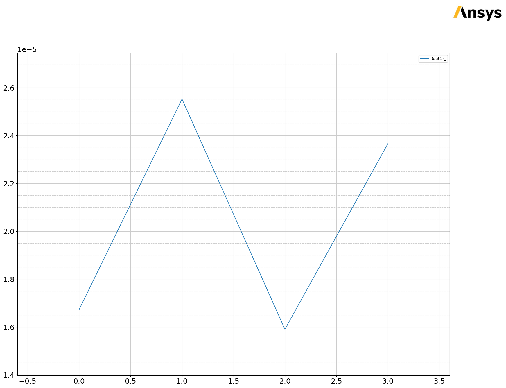
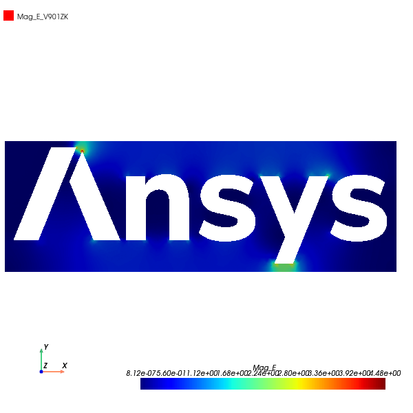
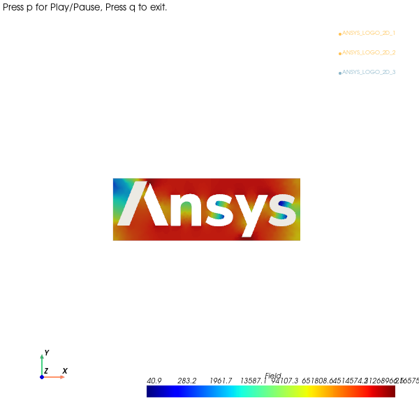
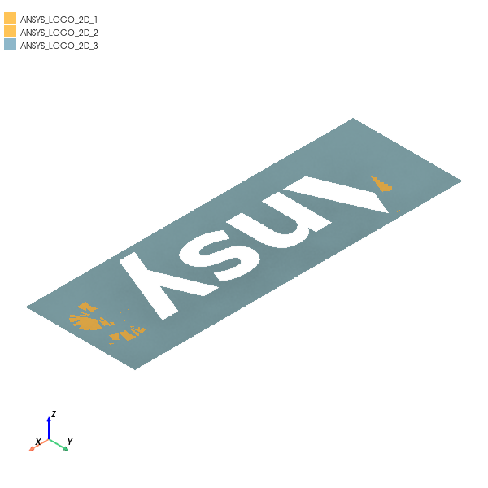

Download this example
Download this example as a Jupyter Notebook or as a Python script.
Resistance calculation#
This example uses PyAEDT to set up a resistance calculation and solve it using the Maxwell 2D DCConduction solver.
Keywords: Maxwell 2D, DXF import, material sweep, expression cache.
Perform imports and define constants#
Perform required imports.
[1]:
import os.path
import tempfile
import time
import ansys.aedt.core
from ansys.aedt.core.examples.downloads import download_file
from ansys.aedt.core.visualization.plot.pdf import AnsysReport
Define constants.
[2]:
AEDT_VERSION = "2025.1"
NG_MODE = False
NUM_CORES = 4
Create temporary directory#
Create a temporary directory where downloaded data or dumped data can be stored. If you’d like to retrieve the project data for subsequent use, the temporary folder name is given by temp_folder.name.
[3]:
temp_folder = tempfile.TemporaryDirectory(suffix=".ansys")
Launch AEDT and Maxwell 2D#
Launch AEDT and Maxwell 2D after first setting up the project and design names, the solver, and the version. The following code also creates an instance of the Maxwell2d class named m2d.
[4]:
project_name = os.path.join(temp_folder.name, "M2D_DC_Conduction.aedt")
m2d = ansys.aedt.core.Maxwell2d(
version=AEDT_VERSION,
new_desktop=True,
close_on_exit=True,
solution_type="DCConduction",
project=project_name,
design="Ansys_resistor",
non_graphical=NG_MODE,
)
PyAEDT INFO: Python version 3.10.11 (tags/v3.10.11:7d4cc5a, Apr 5 2023, 00:38:17) [MSC v.1929 64 bit (AMD64)].
PyAEDT INFO: PyAEDT version 0.18.dev0.
PyAEDT INFO: Initializing new Desktop session.
PyAEDT INFO: Log on console is enabled.
PyAEDT INFO: Log on file C:\Users\ansys\AppData\Local\Temp\pyaedt_ansys_00e53b5d-e7b7-4d04-9e93-1db21184ff4d.log is enabled.
PyAEDT INFO: Log on AEDT is disabled.
PyAEDT INFO: Debug logger is disabled. PyAEDT methods will not be logged.
PyAEDT INFO: Launching PyAEDT with gRPC plugin.
PyAEDT INFO: New AEDT session is starting on gRPC port 55951.
PyAEDT INFO: Electronics Desktop started on gRPC port: 55951 after 6.159944534301758 seconds.
PyAEDT INFO: AEDT installation Path C:\Program Files\ANSYS Inc\v251\AnsysEM
PyAEDT INFO: Ansoft.ElectronicsDesktop.2025.1 version started with process ID 712.
PyAEDT INFO: Project M2D_DC_Conduction has been created.
PyAEDT INFO: Added design 'Ansys_resistor' of type Maxwell 2D.
PyAEDT INFO: Aedt Objects correctly read
Import geometry as a DXF file#
You can test importing a DXF or a Parasolid file by commenting and uncommenting the following lines. Importing DXF files only works in graphical mode.
[5]:
# dxf_path = ansys.aedt.core.examples.downloads.download_file("dxf", "Ansys_logo_2D.dxf")
# dxf_layers = m2d.get_dxf_layers(dxf_path)
# m2d.import_dxf(dxf_path, dxf_layers, scale=1E-05)
parasolid_path = download_file(
source="x_t", name="Ansys_logo_2D.x_t", local_path=temp_folder.name
)
m2d.modeler.import_3d_cad(parasolid_path)
PyAEDT INFO: Modeler2D class has been initialized!
PyAEDT INFO: Modeler class has been initialized! Elapsed time: 0m 0sec
PyAEDT INFO: Step file C:\Users\ansys\AppData\Local\Temp\tmp8x3d4sg6.ansys\x_t\Ansys_logo_2D.x_t imported
[5]:
True
Define variables#
Define the conductor thickness in the z-direction, the material array with four materials, and the material index referring to the material array.
[6]:
m2d["MaterialThickness"] = "5mm"
m2d["ConductorMaterial"] = '["Copper", "Aluminum", "silver", "gold"]'
material_index = 0
m2d["MaterialIndex"] = str(material_index)
no_materials = 4
Assign materials#
Voltage ports are defined as gold. The conductor gets the material defined by the 0th entry of the material array.
[7]:
m2d.assign_material(assignment=["ANSYS_LOGO_2D_1", "ANSYS_LOGO_2D_2"], material="gold")
m2d.modeler["ANSYS_LOGO_2D_3"].material_name = "ConductorMaterial[MaterialIndex]"
PyAEDT INFO: Materials class has been initialized! Elapsed time: 0m 0sec
Assign voltages#
[8]:
m2d.assign_voltage(assignment=["ANSYS_LOGO_2D_1"], amplitude=1, name="1V")
m2d.assign_voltage(assignment=["ANSYS_LOGO_2D_2"], amplitude=0, name="0V")
PyAEDT INFO: Boundary Voltage 1V has been created.
PyAEDT INFO: Boundary Voltage 0V has been created.
[8]:
<ansys.aedt.core.modules.boundary.common.BoundaryObject at 0x1e8071c2920>
Set up conductance calculation#
1V is the source. 0V is the ground.
[9]:
m2d.assign_matrix(assignment=["1V"], group_sources=["0V"], matrix_name="Matrix1")
PyAEDT INFO: Boundary Matrix Matrix1 has been created.
[9]:
<ansys.aedt.core.modules.boundary.maxwell_boundary.MaxwellParameters at 0x1e8099166b0>
Assign mesh operation#
Assign three millimeters as the maximum length.
[10]:
m2d.mesh.assign_length_mesh(
assignment=["ANSYS_LOGO_2D_3"],
name="conductor",
maximum_length=3,
maximum_elements=None,
)
PyAEDT INFO: Mesh class has been initialized! Elapsed time: 0m 0sec
PyAEDT INFO: Mesh class has been initialized! Elapsed time: 0m 0sec
[10]:
<ansys.aedt.core.modules.mesh.MeshOperation at 0x1e809916500>
Create simulation setup and enable expression cache#
Create the simulation setup with a minimum of four adaptive passes to ensure convergence. Enable the expression cache to observe the convergence.
[11]:
setup = m2d.create_setup(name="Setup1", MinimumPasses=4)
setup.enable_expression_cache(
report_type="DCConduction",
expressions="1/Matrix1.G(1V,1V)/MaterialThickness",
isconvergence=True,
conv_criteria=1,
use_cache_for_freq=False,
)
[11]:
True
Analyze setup#
Run the analysis.
[12]:
m2d.save_project()
m2d.analyze(setup=setup.name, cores=NUM_CORES, use_auto_settings=False)
PyAEDT INFO: Project M2D_DC_Conduction Saved correctly
PyAEDT INFO: Key Desktop/ActiveDSOConfigurations/Maxwell 2D correctly changed.
PyAEDT INFO: Solving design setup Setup1
PyAEDT INFO: Key Desktop/ActiveDSOConfigurations/Maxwell 2D correctly changed.
PyAEDT INFO: Design setup Setup1 solved correctly in 0.0h 0.0m 14.0s
[12]:
True
Create parametric sweep#
Create a parametric sweep to sweep all the entries in the material array. Save fields and mesh. Use the mesh for all the materials.
[13]:
sweep = m2d.parametrics.add(
variable="MaterialIndex",
start_point=0,
end_point=no_materials - 1,
step=1,
variation_type="LinearStep",
name="MaterialSweep",
)
sweep["SaveFields"] = True
sweep["CopyMesh"] = True
sweep["SolveWithCopiedMeshOnly"] = True
sweep.analyze(cores=NUM_CORES)
PyAEDT INFO: Parsing C:/Users/ansys/AppData/Local/Temp/tmp8x3d4sg6.ansys/M2D_DC_Conduction.aedt.
PyAEDT INFO: File C:/Users/ansys/AppData/Local/Temp/tmp8x3d4sg6.ansys/M2D_DC_Conduction.aedt correctly loaded. Elapsed time: 0m 0sec
PyAEDT INFO: aedt file load time 0.015617132186889648
PyAEDT INFO: Key Desktop/ActiveDSOConfigurations/Maxwell 2D correctly changed.
PyAEDT INFO: Solving Optimetrics
PyAEDT INFO: Key Desktop/ActiveDSOConfigurations/Maxwell 2D correctly changed.
PyAEDT INFO: Design setup MaterialSweep solved correctly in 0.0h 0.0m 16.0s
[13]:
True
Output variable#
Define output variable.
[14]:
expression = "1/Matrix1.G(1V,1V)/MaterialThickness"
m2d.ooutput_variable.CreateOutputVariable(
"out1", expression, m2d.nominal_sweep, "DCConduction", []
)
Create report#
Create a material resistance versus material index report.
[15]:
variations = {"MaterialIndex": ["All"], "MaterialThickness": ["Nominal"]}
report = m2d.post.create_report(
expressions="out1",
primary_sweep_variable="MaterialIndex",
report_category="DCConduction",
plot_type="Data Table",
variations=variations,
plot_name="Resistance vs. Material",
)
# ## Get solution data
#
# Get solution data using the ``report``` object to get resistance values
# and plot data outside AEDT.
data = report.get_solution_data()
resistance = data.data_magnitude()
material_index = data.primary_sweep_values
data.primary_sweep = "MaterialIndex"
data.plot(snapshot_path=os.path.join(temp_folder.name, "M2D_DCConduction.jpg"))
# ## Create material index versus resistance table
#
# Create material index versus resistance table to use in the PDF report generator.
# Create ``colors`` table to customize each row of the material index versus resistance table.
material_index_vs_resistance = [["Material", "Resistance"]]
colors = [[(255, 255, 255), (0, 255, 0)]]
for i in range(len(data.primary_sweep_values)):
material_index_vs_resistance.append(
[str(data.primary_sweep_values[i]), str(resistance[i])]
)
colors.append([None, None])
PyAEDT INFO: PostProcessor class has been initialized! Elapsed time: 0m 0sec
PyAEDT INFO: PostProcessor class has been initialized! Elapsed time: 0m 0sec
PyAEDT INFO: Post class has been initialized! Elapsed time: 0m 0sec
PyAEDT INFO: Solution Data Correctly Loaded.

Overlay fields#
Plot the electric field and current density on the conductor surface.
[16]:
conductor_surface = m2d.modeler["ANSYS_LOGO_2D_3"].faces
plot1 = m2d.post.create_fieldplot_surface(
assignment=conductor_surface, quantity="Mag_E", plot_name="Electric Field"
)
plot2 = m2d.post.create_fieldplot_surface(
assignment=conductor_surface, quantity="Mag_J", plot_name="Current Density"
)
PyAEDT INFO: Active Design set to Ansys_resistor
PyAEDT INFO: Active Design set to Ansys_resistor
Overlay fields using PyVista#
Plot electric field using PyVista and save to an image file.
[17]:
py_vista_plot = m2d.post.plot_field(
quantity="Mag_E", assignment=conductor_surface, plot_cad_objs=False, show=False
)
py_vista_plot.isometric_view = False
py_vista_plot.camera_position = [0, 0, 7]
py_vista_plot.focal_point = [0, 0, 0]
py_vista_plot.roll_angle = 0
py_vista_plot.elevation_angle = 0
py_vista_plot.azimuth_angle = 0
py_vista_plot.plot(os.path.join(temp_folder.name, "mag_E.jpg"))
PyAEDT INFO: Active Design set to Ansys_resistor
C:\actions-runner\_work\pyaedt-examples\pyaedt-examples\.venv\lib\site-packages\pyvista\jupyter\notebook.py:37: UserWarning: Failed to use notebook backend:
Please install `ipywidgets`.
Falling back to a static output.
warnings.warn(

[17]:
True
Plot field animation#
Plot current density verus the material index.
[18]:
animated_plot = m2d.post.plot_animated_field(
quantity="Mag_J",
assignment=conductor_surface,
export_path=temp_folder.name,
variation_variable="MaterialIndex",
variations=[0, 1, 2, 3],
show=False,
export_gif=False,
log_scale=True,
)
animated_plot.isometric_view = False
animated_plot.camera_position = [0, 0, 7]
animated_plot.focal_point = [0, 0, 0]
animated_plot.roll_angle = 0
animated_plot.elevation_angle = 0
animated_plot.azimuth_angle = 0
animated_plot.animate()
PyAEDT INFO: Active Design set to Ansys_resistor
PyAEDT INFO: Active Design set to Ansys_resistor
PyAEDT INFO: Active Design set to Ansys_resistor
PyAEDT INFO: Active Design set to Ansys_resistor
C:\actions-runner\_work\pyaedt-examples\pyaedt-examples\.venv\lib\site-packages\pyvista\jupyter\notebook.py:37: UserWarning: Failed to use notebook backend:
Please install `ipywidgets`.
Falling back to a static output.
warnings.warn(

[18]:
True
Export model picture#
[19]:
model_picture = m2d.post.export_model_picture()
Generate PDF report#
Generate a PDF report with the output of the simulation.
[20]:
pdf_report = AnsysReport(
project_name=m2d.project_name, design_name=m2d.design_name, version=AEDT_VERSION
)
Customize the text font.
[21]:
pdf_report.report_specs.font = "times"
pdf_report.report_specs.text_font_size = 10
Create the report
[22]:
pdf_report.create()
[22]:
True
Add project’s design information to the report.
[23]:
pdf_report.add_project_info(m2d)
PyAEDT WARNING: Argument `export_path` is deprecated for method `wrapper`; use `output_file` instead.
C:\actions-runner\_work\pyaedt-examples\pyaedt-examples\.venv\lib\site-packages\pyvista\jupyter\notebook.py:37: UserWarning: Failed to use notebook backend:
Please install `ipywidgets`.
Falling back to a static output.
warnings.warn(

[23]:
True
Add the model picture in a new chapter. Then, add text.
[24]:
pdf_report.add_chapter("Model Picture")
pdf_report.add_text("This section contains the model picture.")
pdf_report.add_image(path=model_picture, caption="Model Picture", width=80, height=60)
[24]:
True
Add field overlay plots in a new chapter.
[25]:
pdf_report.add_chapter("Field overlay")
pdf_report.add_sub_chapter("Plots")
pdf_report.add_text("This section contains the fields overlay.")
pdf_report.add_image(
os.path.join(temp_folder.name, "mag_E.jpg"), caption="Mag E", width=120, height=80
)
pdf_report.add_page_break()
Add a new section to display results.
[26]:
pdf_report.add_section()
pdf_report.add_chapter("Results")
pdf_report.add_sub_chapter("Resistance vs. Material")
pdf_report.add_text("This section contains resistance versus material data.")
# Aspect ratio is automatically calculated if only width is provided
pdf_report.add_image(os.path.join(temp_folder.name, "M2D_DCConduction.jpg"), width=130)
[26]:
True
Add a new subchapter to display resistance data from the previously created table.
[27]:
pdf_report.add_sub_chapter("Resistance data table")
pdf_report.add_text("This section contains resistance data.")
pdf_report.add_table(
title="Resistance Data",
content=material_index_vs_resistance,
formatting=colors,
col_widths=[75, 100],
)
Add a table of contents and save the PDF.
[28]:
pdf_report.add_toc()
pdf_report.save_pdf(temp_folder.name, "AEDT_Results.pdf")
[28]:
'C:\\Users\\ansys\\AppData\\Local\\Temp\\tmp8x3d4sg6.ansys\\AEDT_Results.pdf'
Release AEDT#
[29]:
m2d.save_project()
m2d.release_desktop()
# Wait 3 seconds to allow AEDT to shut down before cleaning the temporary directory.
time.sleep(3)
PyAEDT INFO: Project M2D_DC_Conduction Saved correctly
PyAEDT INFO: Desktop has been released and closed.
Clean up#
All project files are saved in the folder temp_folder.name. If you’ve run this example as a Jupyter notebook, you can retrieve those project files. The following cell removes all temporary files, including the project folder.
[30]:
temp_folder.cleanup()
Download this example
Download this example as a Jupyter Notebook or as a Python script.